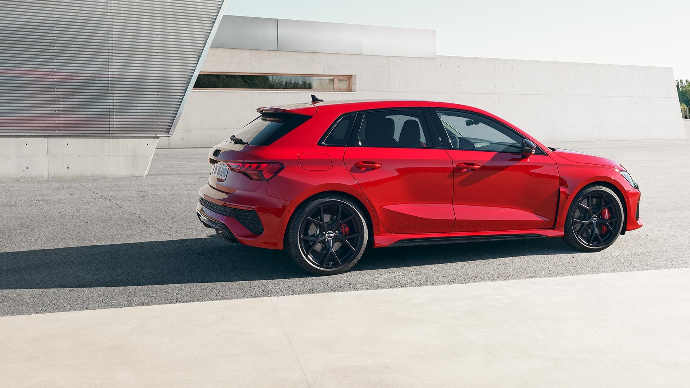
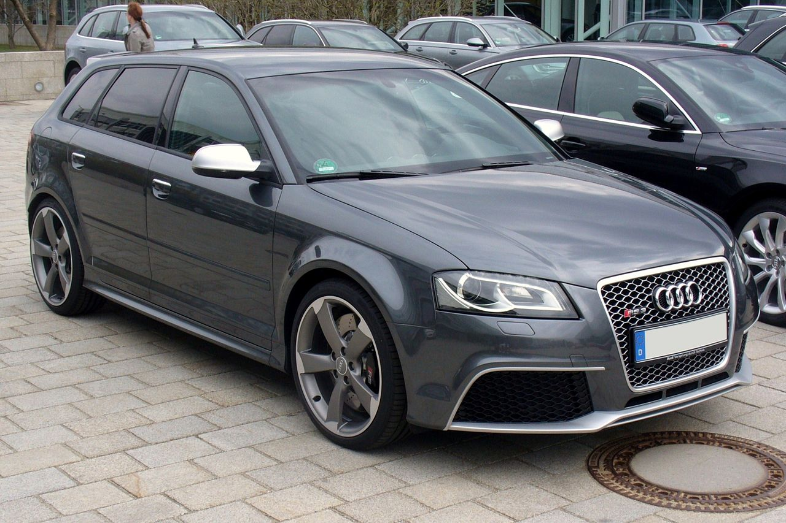
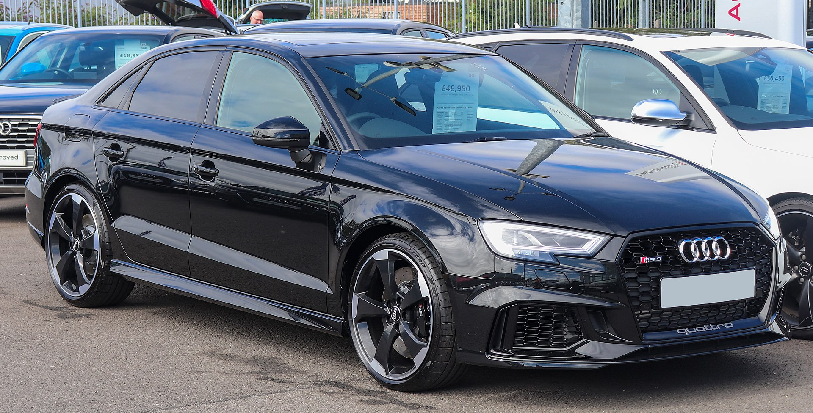
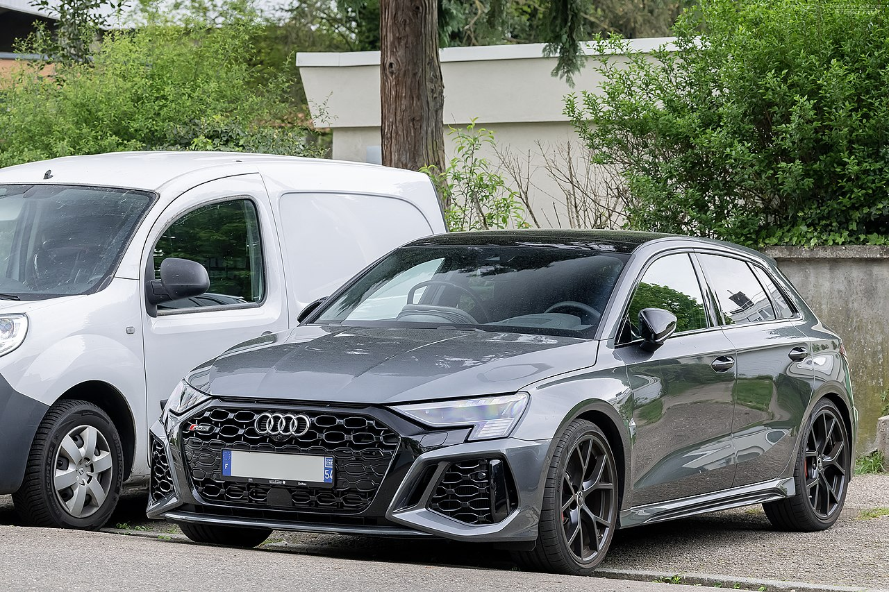

Audi RS3
Audi RS3 Sportback (укр. Ауді РС3 Спортбек) — спортивний 5-дверний хетчбек C-класу німецької компанії Audi.
Зміст
Перше покоління
У листопаді 2010 року відбувся дебют Audi RS3 Sportback, який був запущений у виробництво в 2011 році. Збирається автомобіль в Угорщині, на заводі Audi в місті Дьор разом з купе Audi TT RS.
Audi RS3, побудований на платформі 5-дверного хетчбека Audi A3 Sportback. Двигун 5-ти циліндровий з турбонаддувом від Audi TT RS
В порівнянні зі звичайною А3, кліренс зменшився на 25 мм, Розмір колісних дисків складає 19 дюймів. Передні шини розміром 235/35, задні — на 10 мм вужчі. Автомобіль оснащений вентильованими передніми і задніми гальмівними дисками діаметром 370 мм і 310 мм відповідно.
Салон виконаний у чорному кольорі і прикрашений логотипами RS 3. У стандартну комплектацію входять спортивні сидіння, оббиті шкірою Fine Nappa; в інтер'єрі використовується обробка «під рояльний лак». В інформаційну систему водія входять індикатори тиску наддуву, і температури масла, а також лічильник кіл траси. Об'єм багажного відділення 302 літри, збільшити його можна склавши задні сидіння і отримати при цьому 1050 літрів
У стандартну комплектацію входить: оббите шкірою багатофункціональне кермо зі «зрізаною» нижньою частиною, двох-зонний клімат-контроль, аудіо-система chorus, ксенонові фари зі світлодіодними секціями денного освітлення. За бажанням клієнта Audi може додатково запропонувати чорні 19-дюймові легко-сплавні диски з червоною окантовкою, спортивні сидіння, вставки Aluminium Race, а також обробку чорним або матовим алюмінієм
Друге покоління
У грудні 2014 року, компанія Audi показала RS3 Sportback другого покоління, а світова прем'єра відбудеться в березні 2015 року на Женевському автосалоні. В продаж автомобіль поступить весною 2015 року
RS3 Sportback отримав інший передній і задній бампери, решітку радіатора, зменшений на 25 мм дорожній просвіт, подвійну вихлопну систему та 19-дюймові колісні диски. Базується авто на вдосконаленій платформі MQB, завдяки цьому авто важить на 55 кг менше за попередника і складає 1520 кілограмів
Під капотом 2,5-літровий бензиновий двигун. Потужність складає 367 к.с. (на 27 більше за попередню модель), які доступні з 5500 до 6800 обертів за хвилину, та 465 Нм крутного моменту доступних в діапазоні від 1625 до 5550 об/хв. Двигун працює із 7-ступеневою КПП S-tronic з подвійним зчепленням та повним приводом Quattro. Система електронного управління повного приводу з багатодисковою муфтою на задній осі, може розподіляти від 50 до 100 % крутного моменту на задню вісь. Викиди СО2 — 189г/км
Нова RS3 Sportback стала найшвидшим хетчбеком від німецького виробника. Від 0 до 100, авто розганяється за 4,3 секунди, а максимальна швидкість обмежена електронікою на позначці у 250 км/год, (опційно можна зняти електронний обмежувач, тим самим збільшивши швидкість до 280 км/год)
В стандартній конфігурації на авто встановлені колеса розмірністю 235/35-R19 спереду та ззаду. Також можна поставити колеса розміром 255/30-R19, але тільки спереду. В підвісці встановлені адаптивні амортизатори Magnetic Ride, а гальмівна система комплектується вуглецево-керамічними дисками
Головним конкурентом для Audi RS3 Sportback є Mercedes-Benz A45 AMG
Третє покоління
19 липня 2021 року Audi представила нове покоління RS3. Він знову буде пропонуватися як Sportback і седан.
Серія все ще оснащена 2,5-літровим бензиновим двигуном потужністю 400 к.с. Розгін до 100 км/год має відбуватися за 3,8 секунди, максимальну швидкість можна збільшити до 290 км/год за додаткову плату.
Починаючи з 2018 року виступаю за клуб "Політехнік" Київ, з яким регулярно займаємо призові місця у Чемпіонаті та Кубку України з регбі